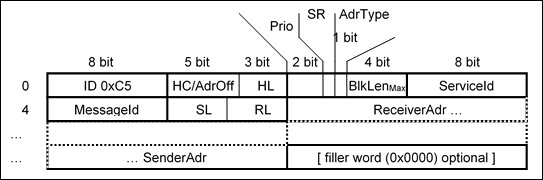

1.5.5. Router Communication¶
A router packet consists of a header and the actual message (data). The length of the header is variable, since node addresses have different lengths. Irrespective of this the data always start at a 4-byte limit within the packet. Correct alignment is therefore always ensured, provided the data are structured accordingly.
The following diagram illustrates the header structure:
- HC/AdrOff: Depending on the hop count addressing type hop count (direct addresses) or the address offset (relative addresses)
- HL: Length of the static header in words. Corresponds to the offset of ReceiverAdr. Currently 3, i.e. 6 bytes.
- AdrType: 0 for direct addresses, 1 for relative
- Prio: Packet priority: 0 low, 1 normal, 2 high, 3 emergency. Packets with higher priority are given preference by routers.
- SR: SignalRouter. Is set by a router to indicate en error (e.g. block size).
- BlkLenMax: Field for maximum block length. The maximum block length is calculated as (BlkLen:sub:`Max`+ 1)*32. ( 0: 32 bytes, 1: 64 bytes, 2: 96 bytes, ..., 15: 512 bytes)
- ServiceId: A kind of port number for the called service.
- MessageId: Is set by the sender. Is used for identification of a message, detection of duplicates for unsecured services, etc.
- SL: Length of the sender address in words
- RL: Length of the receiver address in words.
- Filler word: 0. Is inserted if SenderAdr does not end at a 4 byte-limit, in order to align the user data with a 4-byte limit.
Minimum packet length (both addresses one word, no content): 12 bytes
1.5.5.1. Hop count¶
This field is initialized to 31 (the maximum number of nodes that a packet has to pass through when the network reaches the maximum depth of 15). Each node that forwards a packet reduces the value of this field by 1. Once the field value has reached 0 the packet can no longer be forwarded. The field also has to be decremented for broadcasts that are forwarded to subnets.
This mechanism offers reliable protection from broadcast floods and infinite packet loops, both for cycles and in the event of misconfiguration.
1.5.5.2. Router signaling¶
This header flag identifies a message as a router message. If a router is unable to deliver a message due to particular circumstances, it generates a new message that is sent back to the sender of the original message, which sets the router flag. The service ID is taken from the undelivered packet, while bit 0 is toggled. A request thus becomes a response and vice versa (see ov_kernel_scheduling). With separate client/server implementation of a service this ensures that the sending component receives the message back.
A router message contains the complete header of the discarded packet. It also contains an ErrorId of the router and further, error-dependent information. The original sender then forwards the packet to the corresponding service as usual. Via a “MessageId” header field, which is generated by the service when a message is sent, the returned message can be assigned to a current request. The router can first analyze the error itself and adapt internal information as required (e.g. the maximum block length for a particular transmission route).
If a message with active router flag cannot be delivered it is discarded without generating a further router message, in order to avoid endless message floods.
1.5.5.3. Variable maximum block length for a transmission route¶
Not all block drivers can send up to 512 bytes (the maximum size of a router packet) in once piece. With many transmission protocols 512 bytes no longer fit into 1, 2, .. frames, which means that for each packet an additional, almost empty frame would have to be generated and sent, resulting in useless overhead. This problem may arise for any fixed block length. Shorter block lengths may therefore be selected, depending on the transmission route (in steps of 32 bytes).
A field in the Level 3 header is reserved for the maximum block length of the transmission route. In the absence of further information this field is initialized with 512 bytes. Each router checks whether the next transmission route has a smaller block length (information from block driver) and updates the field as required. The header of the receiver then contains the smallest maximum block length for the whole communication path. If a packet cannot be forwarded due to excessive block length, it is discarded and the problem is reported to the sender via the signaling mechanism ( 5.5.2).
Router components should remember the values determined in this way, at least for the last communication partners. Since the first packets between two end points are generally relatively small packets (e.g. connection setup, network scan, ...) no packets should have to be discarded due to this mechanism during normal operation.
1.5.5.4. Multiple router instances¶
Routers are Instantiable, i.e. for each device several router instances can exist simultaneously. Each router exclusively manages part of the block drivers, i.e. there is no joint block driver access. Each router instance has its own main network configuration, and therefore has its own address and forms its own (partial) network. There is no provision for direct routing between router instances. Consequently, a router instance always has to be specified in order to be able to send network packets. Router instances are given a name for identification and are addressed via an Id.
In order to keep the configuration simple, a default router is available that can be used for standard communication. Further routers are available for redundant network connections, service channels etc.
The default configuration of a router comprises a main network connection but no subnets. Subnets have to be configured explicitly in order to avoid problems.